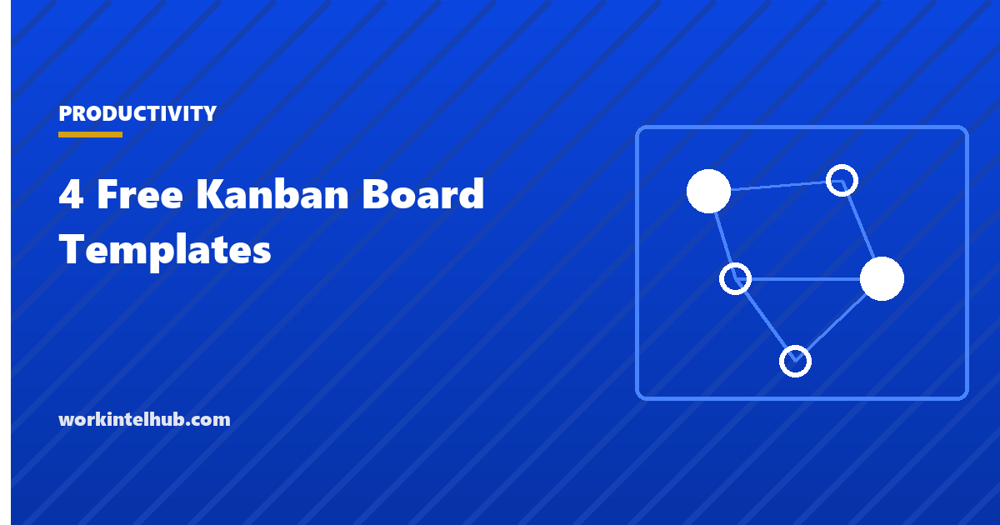

4 Free Kanban Board Templates

A Kanban board makes work visible: every item is a card, every stage is a column, and the board shows at a glance what is waiting, what is in progress and what is stuck. Its power comes from one rule most boards ignore, the work-in-progress limit, which caps how many cards a column may hold and forces the team to finish things before starting more. Without the limit it is a to-do list with columns; with it, cycle times fall and the bottleneck becomes obvious.
Four boards are here. A basic three-column board for anyone, a team board with WIP limits and a cycle-time log, a personal board for one person's week, and a support or operations board with classes of service for urgent work. The Excel version counts cards per column against the limit and calculates cycle time from the dates on each card; the Word and PDF versions are printable boards and card formats for a wall.
Download the templates
Free files: Word, Excel and PDF
Three files, free, no email required. Word to edit, Excel to track, PDF to print or share.
Templates open in Microsoft Word, Excel, Google Docs and Sheets, LibreOffice and any PDF reader. Free to use and adapt for your organisation.
The four boards
| Board | Columns | WIP limits | For |
|---|---|---|---|
| Basic | To do, Doing, Done | None to start | Anyone new to Kanban |
| Team | Backlog, Ready, In progress, Review, Done | Ready 5, In progress 3, Review 2 (adjust to team size) | Development, marketing, operations teams |
| Personal | This week, Today, Doing, Done | Today 3, Doing 1 | One person's week |
| Support | New, Triaged, In progress, Waiting, Resolved | In progress 4 | Helpdesks and operations with urgent work |
The WIP limit is the method
Starting work feels productive and finishing it is what counts. A work-in-progress limit of three on In progress means the fourth item waits in Ready until one finishes, which is uncomfortable for a week and then transformative: items move through faster because nothing competes for attention, blocked items get unblocked because they are the only thing to do, and the column that is always full shows where the bottleneck is. Set the limit at the number of people who can work independently on the column, or slightly fewer, and lower it until it hurts a little.
The context switching guide covers why limiting concurrent work raises throughput, and the task batching page the personal version of the same idea.
Cycle time, not velocity
Kanban measures how long a card takes from started to finished (cycle time) and how many finish per week (throughput). The Excel log calculates both and the 85th percentile cycle time, which is the honest promise to a customer: "85 percent of requests are done within nine days". Cycle time rising means WIP is too high or something is blocked; throughput falling with WIP steady means the work got bigger. Neither needs estimates, which is why many teams prefer Kanban to sprints for support, operations and maintenance work.
Classes of service for urgent work
- Expedite: one at a time, jumps the queue, the team swarms it. If there are two expedites, neither is.
- Fixed date: must start by the date that makes the deadline, calculated from cycle time.
- Standard: first in, first out within the WIP limit.
- Intangible: improvement work with no deadline, pulled when nothing else is ready, so it happens.
- The support board uses these to stop urgent work from silently consuming the whole team.
Key takeaways
- A Kanban board makes work visible; the WIP limit is what makes it work.
- Set limits at the number of people who can work a column independently, and lower them until they bite.
- Measure cycle time and throughput, and promise the 85th percentile.
- Use classes of service so urgent work has a rule instead of a veto.
Frequently asked questions
What is a Kanban board?
A visual board where each work item is a card and each stage of the process is a column, usually To do, Doing and Done at minimum. Cards move left to right as work progresses. Team boards add work-in-progress limits per column and measure cycle time.
What is a WIP limit?
The maximum number of cards a column may hold at once. It forces the team to finish work before starting more, which reduces multitasking, exposes bottlenecks and shortens cycle time. A common starting point is the number of people working the column, or slightly fewer.
What is the difference between Kanban and Scrum?
Scrum works in fixed-length sprints with planning, a committed backlog and velocity. Kanban is continuous flow with WIP limits and cycle-time measurement, no sprints and no estimates required. Kanban suits support, operations and maintenance; Scrum suits product development with planned increments. Many teams combine them.
How do I measure cycle time?
Record the date a card starts (enters In progress) and the date it finishes. Cycle time is the difference. Track the average and the 85th percentile; the percentile is the number to promise, because the average hides the slow cards.
Can I use a Kanban board for personal work?
Yes. The personal board in the download uses This week, Today (limit three), Doing (limit one) and Done. The single-item Doing limit is the rule that makes it work: one thing at a time until it is finished.